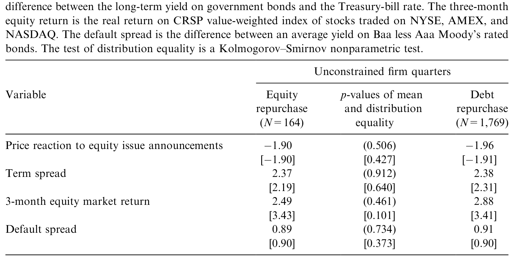
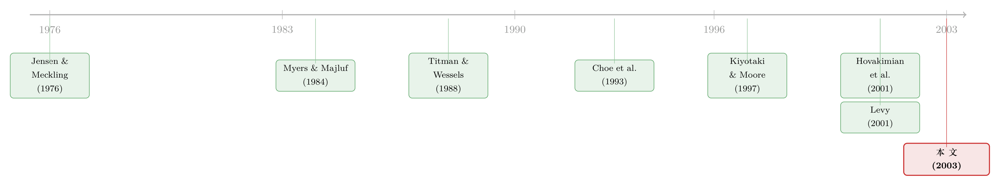

衰退里，公司反而更爱借钱——一道被「融资约束」掰成两半的杠杆周期
本文读的是 Korajczyk & Levy (2003, Journal of Financial Economics)：把企业按「融资约束」一刀切开后，目标杠杆的周期性会彻底翻脸——相对宽裕的公司，杠杆是反周期的（衰退里更高）；相对拮据的公司，杠杆却是顺周期的。前者会挑着宏观最有利的窗口去发行证券，后者根本没有这份择时的奢侈。
1 一张图里的悖论
先看一张让无数公司金融研究者如鲠在喉的图。
把过去半个世纪美国非金融企业的总杠杆 (aggregate leverage)——用债务的账面值除以「债务账面值 + 股权市值」——画出来，再把 NBER 标定的衰退期涂成阴影，你会发现一个顽固的规律：企业的债务比率，几乎每一次都在经济下行时冲上波峰。1974、1982、1990……萧条到了，杠杆反而高了。
这有什么奇怪的？奇怪之处在于，它跟我们写在教科书第一页的那套权衡理论 (tradeoff theory) 唱了反调。
权衡理论的逻辑很顺：负债的好处（税盾、对自由现金流的约束）要去和坏处（破产的死荷损失、财务困境成本）相抵。那么在扩张期——股市火热、预期破产成本低、公司有应税利润可以拿税盾去挡、手里又有大把自由现金——债务理应更划算才对。换句话说，权衡理论预测的是顺周期的杠杆：好年景多借，坏年景少借。
可数据偏偏拗着来：坏年景，杠杆更高。
这里要先排除一个偷懒的解释：杠杆在衰退里变高，会不会只是因为分母（股权市值）跌了，所以「机械地」抬高了比率？作者特意强调，这些样本公司离破产都很远，所以像资产替代（Jensen, 1986）、债务积压（Myers, 1977）这类财务困境故事，并不足以解释观察到的模式。真正要解释的，是主动的发行选择，而不只是估值的被动涨跌。
于是，一个自然的问题浮出水面：如果不是权衡理论，那是谁在衰退里把杠杆推上去的？
2 把「一家公司」拆成两种公司
这篇论文最关键的一步，不是引入了什么新变量，而是做了一次分样本。
作者的判断是：所谓「企业」根本不是同质的一群。有的公司随时能去公开市场融资、能挑时机、能在债与股之间从容切换；有的公司则被现金流死死摁住，投资机会摆在眼前却凑不齐钱。把这两类混在一起算平均，正反两股力量互相抵消，你看到的只是一团糊。
所以他们沿用了 Fazzari, Hubbard & Petersen (1988) 的思路，但加了一道更严的筛子，把样本切成财务受约束 (financially constrained) 与财务不受约束 (unconstrained) 两类。一个公司被打上「受约束」的标签，要同时满足两条：
- 在事件窗口内既不回购债务或股权，也不派现——也就是说，它把每一分留存收益都攥在手里，舍不得分出去；
- 期末的托宾 Q (Tobin's Q) 大于 1——也就是说，它确实有投资机会，不是一家走投无路的困境公司。
这两条合起来，刻画的是一类很具体的公司：手里有好项目，外部融资又贵，于是只能靠内部资金硬扛。这正是「融资约束」这个概念最干净的样子。（关于「融资约束」本身其实有好几种互不相同的来源，可参见《同样是「借不到钱」，原因却各不相同：把融资约束拆回它的三个源头》。）
这把尺子量出来的两类公司，长得确实很不一样。受约束样本规模要小得多——账面资产均值只有 93.00（受约束）对 426.89（不受约束，1980 年美元，单位百万），中位数 20.82 对 70.75；它们的资本开支占资产的比例更高，营业利润却更低（营业利润/账面资产均值 2.07% 对 3.65%）。最妙的一处对照在债务比率上：用市值衡量，受约束公司杠杆更低（18.69% 对 27.98%）；可一旦换成账面值衡量，两者几乎一模一样（27.62% 对 26.98%，均值相等的 p 值高达 0.965）。这背后是抵押品的逻辑——账面值代理的是有形资产，而有形资产才是能押给银行的东西。
更关键的一条验证，来自投资对现金流的敏感度。把投资（资本开支）对现金流、滞后 Q、滞后现金回归，受约束样本的现金流系数显著为正、不受约束样本则不敏感——这正是 Fazzari et al. (1988) 用来识别约束的经典指纹。换句话说，作者不是凭空贴标签：被他们划进「受约束」的公司，真的表现得像被钱卡住了脖子。
一个旁证，顺手说明这把尺子没跑偏：若改用 Lamont, Polk & Saá-Requejo (2001) 那套增广版 Kaplan-Zingales 指标，落在最受约束十分位的公司，比不那么受约束的公司多出约 15% 的概率会去做一次大额证券回购。两套完全不同的分类口径，指向了一致的方向。
3 反转：同一个周期，两个相反的符号
切完样本，真正的反转就来了。
作者先估一条目标杠杆 (target leverage) 方程：把企业的债务比率，同时对一组宏观条件 (macroeconomic conditions) 和一组公司特征 (firm-specific variables) 回归，用拟合值当作这家公司「该有的」目标杠杆。设定大致是这样：
（论文里还带了一个 1986 年税改的虚拟变量 d86，以及个体—时间的交互项；为聚焦主线，这里略去。所有解释变量都滞后一期，因为它们的公开发布日期当时还未必知道。）
公司特征那一块（系数 b）的结果，和过去的横截面研究高度一致，也很「教科书」：规模更大、有形资产更多的公司，目标杠杆更高；资产越独特，杠杆越低；折旧税盾越大，目标杠杆越低（这一条符合权衡理论）。这些都不意外。
意外的是宏观那一块（系数 a），而且两个子样本的符号是反的：
- 对不受约束样本，目标杠杆是反周期的——宏观条件转好时，目标杠杆反而下降。这恰好对上了开篇那张图：衰退里杠杆冲高。
- 对受约束样本，目标杠杆却是顺周期的——好年景借得多，坏年景借得少。
一正一负，藏在总量平均里互相抵消。这就是为什么把全样本搅在一起时，宏观周期对杠杆的作用总是看起来「时有时无、忽强忽弱」。
那么，这两个相反的符号，各自对应着哪一套理论？
不受约束的反周期，更像一个啄食顺序 (pecking order) 的故事。Myers & Majluf (1984) 告诉我们，外部融资是有逆向选择成本的，所以公司偏好先用内部资金，再用债，最后才是股。扩张期公司内部现金充裕，于是用留存收益去投资，少借债；衰退期内部现金枯竭，才被迫举债——杠杆自然反周期。Levy (2001) 还给了一个代理模型的版本：衰退里有杠杆的经理人相对外部股东变穷了，代理冲突恶化，于是最优杠杆要调高，去重新对齐经理人和股东的激励。这同样指向反周期。
受约束的顺周期，则正好落在信贷渠道 (credit channel) 那条线上。Kiyotaki & Moore (1997) 的信用周期模型里，受约束的主体永远顶着自己的借款上限，而他们能押的抵押品价值是顺周期的——好年景抵押品值钱，能借得更多；坏年景抵押品缩水，借款上限收紧。于是受约束公司的杠杆，被抵押品的顺周期价值拽着一起顺周期。作者发现受约束样本恰恰是顺周期杠杆，正好给 Kiyotaki-Moore 这条预测背了书。
你看，所谓「杠杆到底顺不顺周期」这个争了很久的问题，答案不是「是」也不是「否」，而是「看你问的是哪一类公司」。这就是这篇论文最干净的一刀。
4 第二步：谁有资格「择时」？
如果说目标杠杆方程刻画的是「公司想去哪」，那么第二阶段刻画的就是「公司怎么走过去」。
正如 Fischer, Heinkel & Zechner (1989) 或 Leland (1994, 1998) 所言，有了摩擦，公司就会偏离目标杠杆。于是作者做第二步：把企业每一次具体的发行选择 (issue choice)——发债还是发股、回购债还是回购股——回归到三样东西上：(1) 当前实际杠杆离目标有多远，(2) 宏观条件，(3) 公司特征。
第一个发现，两类公司都有：发行/回购选择对「偏离目标的距离」很敏感，而且受约束样本尤其敏感。这其实合乎直觉——日子紧的公司一旦偏离目标，调整的压力更大。这一条同时也是对权衡理论的一点支持：偏离目标确实在驱动证券发行。
但真正分出胜负的，是宏观条件那一项。
对不受约束样本，宏观条件是发行选择的显著决定因素；对受约束样本，则弱得多。换句话说，宽裕的公司会挑时机：在相对定价对自己有利的窗口去发行——股市跑得好、发股最划算时就发股，反之就发债。这正是 Bayless & Chaplinsky (1996) 所说的「机会之窗 (window of opportunity)」，也呼应了 Lucas & McDonald (1990)、Korajczyk, Lucas & McDonald (1990) 那条「股价跑高之后股权发行扎堆」的证据。作者甚至把「近期股权发行公告的平均价格反应」放进回归，发现它也只对不受约束样本的发行选择有解释力。
而受约束的公司呢？它们没有这份择时的奢侈。投资机会等不起，钱必须现在就到位，市场窗口是好是坏，由不得它挑。
宏观条件甚至还显著地决定了不受约束样本的回购选择。作者为回购这个子样本单列了描述统计，如表 4 所示——回购这个决策本身，在宽裕公司手里也成了一件「看天行事」的事。

Table 4: presents sample mean and median values for repurchase choice
到这里，全文的那一个核心已经被讲透了：宏观周期当然影响资本结构，但它的影响必须先经过「融资约束」这道闸。能择时的公司（不受约束）让杠杆反周期、让发行追着有利窗口走；不能择时的公司（受约束）被抵押品和现金流推着顺周期地动。把这两类混在一起，你只会看到一团互相抵消的噪声；把它们分开，悖论才迎刃而解。
5 数据：一把「只看大动作」的筛子
值得专门说一句作者的样本构造，因为它决定了这套识别的可信度。
数据是 1984:1–1999:3 的季度 COMPUSTAT 加月度 CRSP。但作者并不看每一个季度，而是只挑资本结构发生显著变动的「事件季度」：要么净股权（含派现）的发行/回购、要么债务账面值的变动，至少达到上一季度账面资产的 5%。这跟 Hovakimian, Opler & Titman (2001) 的做法一脉相承——只在公司真正做大动作时去看它的选择，信号才清晰。（这套「在显著调整时点上识别目标杠杆」的方法论，也可参见《同一年里既借钱又发股：一把拆开「盈利—杠杆之谜」的钥匙》。）
他们还要求公司在变动前后各有 8 个季度的 Compustat 数据，并在事件前至少有 48 个月的 CRSP 数据——后者是为了剔除刚 IPO 不久、发行动机特殊的「年轻公司」（Welch, 1989, 1996）。监管色彩浓的公用事业和金融公司也被排除。最后落定：共 5,623 个事件季度，其中 565 个被划为受约束、5,059 个不受约束。
一个能说明「约束」确实咬人的细节：这 565 家受约束公司里，只有 8 家有标普评级的投资级债券；而整个样本中也只有约 20% 的公司有债券评级。受约束样本几乎被挡在公开债券市场门外——这本身就是约束的一种体现。
顺带一提，分类是会变的。大约三分之一重新进入样本的公司，会在两类之间切换身份。这说明「约束」不是一顶终身帽子，而是一种相对的、随时间变化的状态——这一点对后面的识别讨论很重要。
6 文献脉络
把这篇论文放回它生长的那条藤上，线索其实很清楚。
最早的两根支柱，是 Jensen & Meckling (1976) 立起的代理/权衡传统，和 Myers (1977)、Myers & Majluf (1984) 立起的啄食顺序传统。前者让杠杆该顺周期，后者让杠杆该反周期——这条张力从一开始就埋下了。
接着，横截面的实证研究——Titman & Wessels (1988)、后来的 Hovakimian et al. (2001)、Fama & French (2002)——反复确认了一件事：公司特征（规模、有形资产、税盾、盈利）和目标杠杆的关系，同时带着权衡和啄食两套理论的影子，谁也无法独占。本文公司特征那一块的结果，正落在这个传统里。

然后，一条平行的线索从宏观这边长出来。Choe, Masulis & Nanda (1993) 发现股权发行顺周期、债务发行反周期；信贷渠道文献——Gertler & Gilchrist (1993, 1994)、Bernanke & Gertler (1995)——则反复指出，受约束的小公司在衰退里更难借钱平滑现金流。理论上，Kiyotaki & Moore (1997) 用抵押品的顺周期价值，给「受约束→顺周期杠杆」写下了机制；Levy (2001) 则用代理模型，给「不受约束→反周期杠杆」写下了机制。
本文 Korajczyk & Levy (2003) 站的位置，恰好是这两条线的交汇点：它借 Hovakimian et al. (2001) 的两阶段方法论，把宏观条件正式塞进目标杠杆和发行选择，再用「融资约束」这把刀，让 Kiyotaki-Moore 与 Levy 两套相反的预测，在同一份数据里各自找到了自己的那一半公司。
7 评论与延伸（Q&A + 研究方向）
(a) 几个可能的疑问
Q：这套「约束 vs 不约束」的分类，会不会本身就是内生的——是结果，不是原因？
这是最该警惕的一点。作者的约束定义里含了「不派现、不回购」，而这恰恰也是衰退里现金紧张的公司会做的事。于是「受约束」与「身处坏年景」之间存在机制上的纠缠，宏观系数的符号有被分类规则「设计」出来的风险。作者用 Q>1 来确保这些公司确有投资机会（而非困境）、并用投资—现金流敏感度做外部验证，缓解了部分担忧；但分类的内生性，仍是这篇论文识别上最软的一环。
Q：杠杆在衰退里变高，凭什么不是单纯的「股价跌→分母变小」？
作者的回应有两层：一是样本公司离破产都很远，困境类机械效应不该是主因；二是他们看的是主动的发行/回购选择这一离散事件，而不只是连续的比率涨跌——一家公司在衰退里选择去发债，不是估值被动变化能解释的。不过，目标杠杆方程用的债务比率仍含市值，市值通道无法被完全洗净。
Q：和 Hovakimian et al. (2001) 到底差在哪？
方法论几乎同源——都是「先估目标杠杆，再看发行选择对偏离的反应」。本文的两处增量：一是把宏观条件显式放进两个阶段（前人多用公司特征）；二是把样本按融资约束劈开，从而让一个被平均掉的周期性符号反转浮出水面。贡献在「分层」，不在「换模型」。
Q：「反周期 vs 顺周期」这个反转，经济意义上有多大？
诚实地说，论文正文里我能确证的、最干净的量级是符号与显著性的对照（不受约束反周期且宏观显著，受约束顺周期且宏观弱），以及分类有效性的那个「多 15% 概率回购」。具体的宏观系数大小，需回到原表逐行核对——我不会替它编一个数字出来。这也提醒读者：这篇论文的说服力，主要来自符号的稳健反转，而非某个惊人的弹性。
Q：受约束样本只有 565 个、且几乎没有评级债券，结论会不会被一小撮公司带偏？
这是个真问题。565 对 5,059，受约束样本既小又「极端」（小公司、无评级、不分红）。好处是这群公司确实把「约束」演绎得很纯粹；代价是外部有效性受限——结论更适合描述「小而紧」的公司，未必能平移到大型、有评级却阶段性偏紧的公司。
Q：这对「权衡 vs 啄食」之争意味着什么？
意味着别再问哪个理论对。公司特征那一块两套理论都对了一半；宏观那一块，不受约束样本更像啄食/择时，受约束样本更像抵押品约束。资本结构不是一个理论能通吃的战场，而是不同公司在不同状态下，被不同机制主导。
(b) 几个可能的研究问题与提案
1. 把这套「约束分层 × 周期」搬到公司债市场
【经济故事】本文用的是 Compustat 的发行/回购大动作。但今天我们有了
TRACE的成交层数据：能不能直接看，受约束 vs 不受约束的发行人，其新发债的定价、期限、二级流动性是否沿周期反向变动？尤其衰退里，受约束发行人是不是被迫接受更短的期限与更高的流动性溢价？ 【可行性】高。TRACE + Mergent FISD + Compustat 即可，约束分类可沿用本文或 KZ/WW 指数。识别上仍需处理分类内生性，但数据完全 doable。
2. 外资持有人是「约束的松绑者」还是「周期的放大器」？
【经济故事】如果一家受约束公司的债券里有更高比例的外资持有，衰退里外资的撤离会不会把它的「顺周期杠杆」放大成「悬崖式去杠杆」？反过来，外资的进入是否在好年景里替它松了绑？这把本文的「谁能择时」问题，接到了「谁的资金更易抽身」。 【可行性】中。需要持有人层面的数据（如 eMAXX、各国托管数据），与发行人约束状态匹配；识别可借助指数纳入或资本账户开放之类的外生冲击。数据获取是主要门槛。
3. 用一次外生的抵押品价值冲击，直接检验 Kiyotaki-Moore 那条腿
【经济故事】本文对「受约束→顺周期」的解释挂在抵押品顺周期价值上，但这是间接推断。能不能找一次抵押品价值的外生变动（如某类资产价格的区域性冲击、或抵押品法律改革），看受约束公司的杠杆是否随之同向变动，而不受约束公司不动？ 【可行性】中。关键在找到干净的抵押品冲击与可信的约束分组；房地产、设备抵押品的自然实验是可能的切口。识别一旦成立，就能把本文的「相关」升级为「机制因果」。
4. 分类会切换——把「进出约束状态」本身当成处理
【经济故事】本文提到约三分之一的回流公司会切换分类。那么一家公司从受约束变为不受约束的那一刻，它的发行行为是否立刻获得了「择时能力」（宏观系数从弱变强）？这是一个公司内部 (within-firm) 的检验，能大幅缓解横截面分类的内生性。 【可行性】高。就在本文数据结构里，做事件研究 / 个体固定效应面板即可，几乎不需要新数据，却能直击识别软肋。
8 我的判断
这篇论文的贡献，不在任何一个新模型，而在一次恰到好处的分层。它把一个被平均掉、因而显得「时有时无」的宏观—杠杆关系，靠融资约束这一刀切出了两个方向相反、各有理论归宿的子样本——不受约束的反周期、受约束的顺周期。开篇那张「杠杆在衰退里见顶」的悖论，到这里就不再是悖论，而是两股力量谁在哪类公司里占了上风的问题。这种「先问是谁，再问为什么」的思路，本身就很有示范意义。
我最大的担忧仍是分类的内生性：约束定义里嵌了「不分红、不回购」，这与「衰退里现金紧」在机制上难解难分，宏观系数的符号有被定义规则部分「制造」出来的嫌疑。作者用 Q、用投资—现金流敏感度做了外部验证，值得肯定，但没能彻底洗清这层纠缠。其次，受约束样本既小又极端（565 家、几乎无评级），外部有效性要打个折。
如果让我接着往下看，我最想要两样东西：一是上面提到的 within-firm 检验——当一家公司切换约束状态时，它的择时能力是否随之开关，这能把横截面对照升级为更可信的识别；二是把这套框架接到今天的公司债微观数据上，看「谁能择时」如何写进新发债的期限、定价与流动性——毕竟，资本结构的周期性，最终都要在信用市场的价格里结清。
（关于「宏观条件如何经由资本结构这条暗线传导」，亦可参见《央行没买你的债，你却也跟着发了债——一条「资本结构」的货币政策暗线》；关于「衰退里谁先动用杠杆去抢市场」，可参见《衰退里，谁先「松手」抢市场？——一笔债，如何改写产品市场的胜负》。）
参考文献
- Bayless, M., Chaplinsky, S. (1996). Is there a window of opportunity for seasoned equity issuance? Journal of Finance 51, 253–278.
- Choe, H., Masulis, R.W., Nanda, V. (1993). Common stock offerings across the business cycle. Journal of Empirical Finance 1, 3–31.
- Fama, E.F., French, K.R. (2002). Testing tradeoff and pecking order predictions about dividends and debt. Review of Financial Studies 15, 1–33.
- Fazzari, S.M., Hubbard, R.G., Petersen, B.C. (1988). Financial constraints and corporate investment. Brookings Papers on Economic Activity 2, 141–195.
- Fischer, E.O., Heinkel, R., Zechner, J. (1989). Dynamic capital structure choice: theory and tests. Journal of Finance 44, 19–40.
- Gertler, M., Gilchrist, S. (1994). Monetary policy, business cycles, and the behavior of small manufacturing firms. Quarterly Journal of Economics 109, 309–340.
- Hovakimian, A., Opler, T., Titman, S. (2001). The debt equity choice. Journal of Financial and Quantitative Analysis 36, 1–24.
- Jensen, M.C., Meckling, W.H. (1976). Theory of the firm: managerial behavior, agency costs, and capital structure. Journal of Financial Economics 3, 305–360.
- Kiyotaki, N., Moore, J. (1997). Credit cycles. Journal of Political Economy 105, 211–248.
- Korajczyk, R.A., Lucas, D., McDonald, R.L. (1990). Understanding stock price behavior around the time of equity issues. In: Hubbard, R.G. (Ed.), Asymmetric Information, Corporate Finance and Investment. University of Chicago Press, Chicago.
- Lamont, O., Polk, C., Saá-Requejo, J. (2001). Financial constraints and stock returns. Review of Financial Studies 14, 529–554.
- Leland, H.E. (1994). Corporate debt value, bond covenants, and optimal capital structure. Journal of Finance 49, 1213–1252.
- Levy, A. (2001). Why does capital structure choice vary with macroeconomic conditions? Unpublished working paper, Haas School of Business, U.C. Berkeley.
- Lucas, D., McDonald, R.L. (1990). Equity issues and stock price dynamics. Journal of Finance 45, 1019–1043.
- Myers, S.C. (1977). Determinants of corporate borrowing. Journal of Financial Economics 5, 147–175.
- Myers, S., Majluf, N. (1984). Corporate financing decisions when firms have information investors do not have. Journal of Financial Economics 13, 187–221.
- Titman, S., Wessels, R. (1988). The determinants of capital structure choice. Journal of Finance 43, 1–19.
- Welch, I. (1989). Seasoned offerings, imitation costs, and the underpricing of initial public offerings. Journal of Finance 44, 421–449.